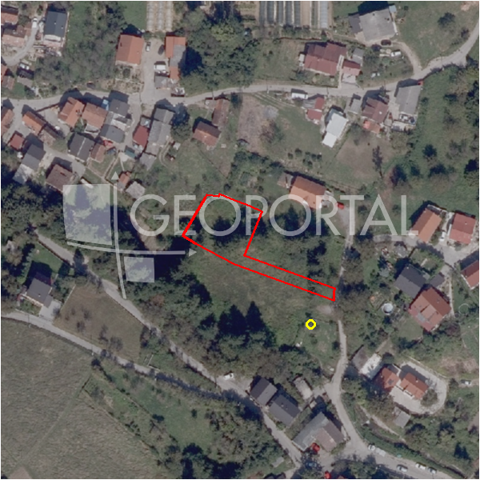

#4632 · Građevinska zemljišta, Markuševec, 788 m2, 729m2, 717m2, 791m2
Markuševec, Podsljeme, Grad Zagreb · zemljiste · njuskalo · status active · oglas ↗
Ocjena
- Score
- 56 rule 56 · LLM – · 12.09.2026.
- RLV
- 145.000 € (184 €/m²) · ratio 2,13
- Ukupna investicija
- 1,04 M€
- GBP
- 473 m²
- Feedback
- –
- CRM
- –
Oglas
- Cijena
- 68.000 € (86 €/m²)
- Površina
- 788 m² · DKP 788 m² (odstupanje -0,1 %)
- Prodavatelj
- agencija · Nekretnine Fortuna 8
- Prvi put
- 11.09.2026. · zadnje 11.09.2026. · 0 d na tržištu
Povijest cijene
| Datum | Cijena |
|---|---|
| 11.09.2026. | 68.000 € |
Flagovi
vlasnistvo suvlasništvo / tereti / ostavina / plomba (−10)zone_uncertainty zona nije pregledana (reviewed: false) (−5)
llm_pending LLM ekstrakcija/ocjena nedostupna
Komponente score-a
| rlv | {'gbp': 472.54200000000003, 'kis': 0.6, 'nkp': 387.48444, 'noi': None, 'rlv': 144640.1753269565, 'ratio': 2.127061401867007, 'value': None, 'phases': 1, 'profile': 'zagreb_visestambeno', 'gdv_neto': 1332946.4736, 'cost_soft': 31187.772, 'gdv_bruto': 1666183.092, 'kis_known': False, 'total_inv': 1036538.2220000001, 'cost_build': 779694.3, 'cost_other': 153576.15000000002, 'cost_sales': 49985.492759999994, 'demolition': False, 'gbp_source': 'kis', 'rlv_per_m2': 183.65373913043473, 'parcel_area': 787.57, 'parcelation': False, 'roi_on_cost': 0.2377362972341987, 'profit_at_ask': 246422.75883999985, 'cost_demolition': 0.0, 'total_inv_phase': 1036538.2220000001, 'parcel_area_effective': 787.57, 'sale_price_per_m2_nkp': 4300.0} |
| hard | [] |
| info | ['llm_pending'] |
| rubric | {'permits': {'max': 10.0, 'detail': {'permit': 'none'}, 'points': 0.0}, 'physical': {'max': 10.0, 'detail': {'slope_pct': 16.87, 'road_access': 'yes', 'slope_points': 2.626}, 'points': 5.63}, 'liquidity': {'max': 10.0, 'detail': {'n_cuts': 0, 'points_cut': 0.0, 'points_days': 0.03333333333333333, 'seller_type': 'agencija', 'points_fresh': 1.0, 'price_cut_pct': None, 'days_on_market': 1, 'points_private': 0}, 'points': 1.03}, 'rlv_ratio': {'max': 40.0, 'detail': {'rlv': 144640, 'ratio': 2.127, 'asking_price': 68000.0}, 'points': 40.0}, 'zone_quality': {'max': 15.0, 'detail': {'source': 'gis', 'zone_class': 'mjesovito_pretezito_stambeno', 'zone_ideal': True, 'gp_uredjeni': True}, 'points': 9.0}, 'price_vs_benchmark': {'max': 15.0, 'detail': {'source': 'auto:Podsljeme', 'deviation': 0.461, 'ask_eur_m2': 86, 'benchmark_eur_m2': 160.0}, 'points': 15.0}} |
| weights | {'llm': 0.4, 'rule': 0.6, 'model': 0.0} |
| penalties | {'vlasnistvo': 10, 'zone_uncertainty': 5} |
| raw_score | 70,7 |
| rlv_notes | [] |
| flag_notes | {'total_inv': 1036538, 'zone_code': 'Pretežito stambena namjena', 'zone_class': 'mjesovito_pretezito_stambeno', 'zone_source': 'gis', 'zone_reviewed': None, 'ownership_flags': ['cisto_1_1']} |
| caps_applied | [] |
GIS
- Čestica
- k.o. 335347, k.č. 4968/6 (pin_buffer, 0,85); k.o. 335347, k.č. 4968/5 (pin_buffer, 0,85); k.o. 335347, k.č. 4945/1 (pin_buffer, 0,84)
- Zona
- Pretežito stambena namjena (mjesovito_pretezito_stambeno)
- kig / kis / katnost
- – / – / –
- GP / UPU
- uredjeni · UPU –
- Pristup / nagib
- yes · 16,9 % (max 24,6 %)
- More
- –
- Zaštite
- Natura ne · zaštićeno ne · kulturno dobro ne
- Zgrade na čestici
- 0 %
- Match
- 0,85
Karta
Ortofoto (DOF)

RLV kalkulacija — pretpostavke
| gbp | {'value': 472.54200000000003, 'source': 'kis'} |
| kis | {'value': 0.6, 'source': 'default_profila'} |
| soft_pct | {'value': 0.04, 'source': 'profil'} |
| nkp_ratio | {'value': 0.82, 'source': 'profil'} |
| cost_other | {'value': 153576.15000000002, 'source': 'profil: doprinosi+uređenje po m² GBP, financiranje+rezerva % gradnje'} |
| parcel_area | {'value': 787.57, 'source': 'dkp'} |
| asking_price | {'value': 68000.0, 'source': 'oglas'} |
| margin_on_cost | {'value': 0.15, 'source': 'profil'} |
| build_cost_per_m2_gbp | {'value': 1650.0, 'source': 'profil'} |
| sale_price_per_m2_nkp | {'value': 4300.0, 'source': 'benchmark:seed:Podsljeme'} |
| transfer_tax_and_acquisition | {'value': 0.06, 'source': 'profil'} |
Ekstrakcija iz oglasa
| utilities | ['struja', 'voda', 'plin'] |
| negotiable | yes |
| access_road | yes |
| ownership_flags | ['cisto_1_1'] |
Opis oglasa
Agencija Fortuna posreduje u prodaji građevinskih zemljišta na području Markuševca. 1. građevinsko zemljište površine 788 m2 = 71.000 EUR 2. građevinsko zemljište površine 729 m2 = 68.000 EUR 3. građevinsko zemljište površine 717 m2 = 68.000 EUR 4. građevinsko zemljište površine 791 m2 = 71.000 EUR Pristupni put, struja, voda, plin, na ulazu na zemljišta. Vlasnički listovi su bez tereta, čisto vlasništvo. Zemljišta se nalaze u ulici Hađaki, nasuprot kućnog broja 12. Možete upisati u navigaciju Hađaki 12 i kada dođete zemljišta su sa lijeve strane. Cijena po dogovoru, ako kupujete dva ili više zemljišta. Za dodatne informacije nazovite 091/501-0285 Agencija za posredovanje u prometu nekretnina FORTUNA 8, Split, Ostravska 4, kao ovlašteni posrednik upisan u Registar posrednika u prometu nekretnina pri Hrvatskoj gospodarskoj komori od 08.01.2009. pod registarskim brojem 2/2009.